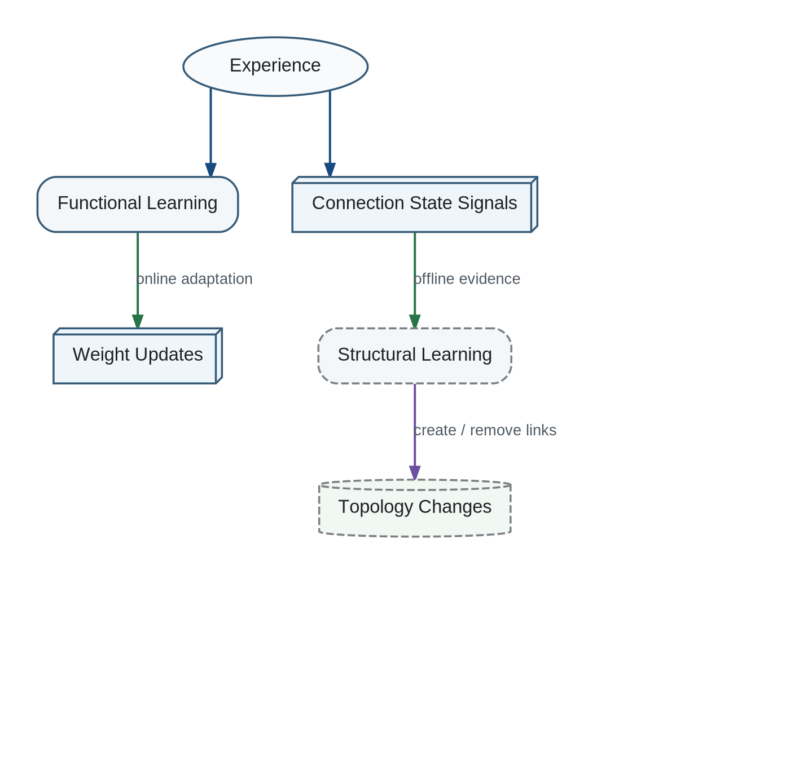

No general function is assumed to map changed weights directly to an optimal new architecture. The system must generate candidate organizations, evaluate them, retain useful changes, and repeat.
Functional and Structural Learning

Current Architecture ↓ Generate Candidate ↓ Replay and Evaluate ↓ Accept / Reject / Partially Apply ↓ Repeat
Candidate generation can initially be simple: alternative clusters, new indexes, split or merged categories, different retention thresholds, or different executor assignments.
Evaluation must include future utility, coherence, latency, complexity, retention of important knowledge, and the cost of transition. A candidate that performs better on one benchmark but destroys continuity is not automatically superior.